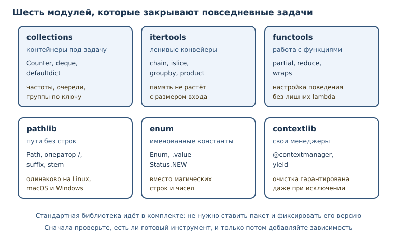
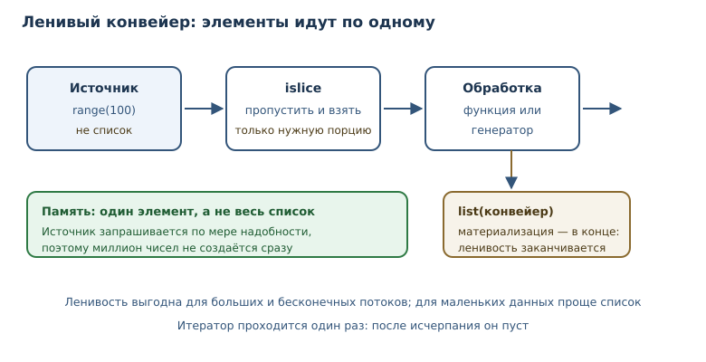

Стандартная библиотека: collections, itertools, functools, pathlib
Инструменты стандартной библиотеки, которые закрывают большинство повседневных задач без внешних зависимостей.
В этой главе
Стандартная библиотека Python — это сотни модулей, которые поставляются вместе с интерпретатором. Она закрывает работу с текстом, файлами, датами, сетью, архивами, базами данных и структурами данных. Знание её карты экономит время и уменьшает число зависимостей: прежде чем искать пакет, стоит проверить, нет ли готового решения в комплекте.
В этой главе — четыре опорных модуля повседневной разработки. collections
даёт специализированные контейнеры, itertools — инструменты ленивой
обработки последовательностей, functools — приёмы работы с функциями, а
pathlib — безопасные пути. К ним добавим перечисления и контекстные
менеджеры, которые делают код выразительнее.
34.1 Что вы сможете после этой главы
- выбирать подходящий контейнер вместо самодельной структуры;
- считать частоты, хранить историю и группировать данные без ручных циклов;
- строить ленивые конвейеры из итераторов и объяснять, когда они экономят память;
- заменять «магические» строки перечислением
Enum; - писать собственные контекстные менеджеры через
contextlib; - свободно собирать и разбирать пути через
pathlib.
34.2 Карта стандартной библиотеки
Полезно держать в голове, за что отвечает каждый крупный модуль. Полный список велик, но повседневность покрывает небольшой набор.
| Задача | Модуль |
|---|---|
| специализированные контейнеры | collections |
| комбинирование итераторов | itertools |
| работа с функциями | functools |
| пути и файлы | pathlib |
| дата и время | datetime |
| сериализация | json, csv |
| журналирование | logging |
| регулярные выражения | re |
| случайные числа | random |
| системные вызовы | os, sys, subprocess |
Правило простое: если задача типовая, вероятность найти готовый инструмент высока. Самодельная реализация нужна, когда стандартная не подходит по требованиям, а не потому, что о ней не знали.
У карты есть и вторая польза: она помогает выбирать между похожими
инструментами. Для очереди подходит deque, для частот — Counter, для
группировки — groupby, для путей — pathlib. Когда инструменты известны,
код становится короче, а ошибки исчезают вместе с самодельными циклами.
Внешняя зависимость оправдана, только если стандартная библиотека не решает
задачу или решает её заметно хуже. У зависимости есть цена: её нужно
устанавливать, обновлять и проверять на уязвимости. Поэтому «есть пакет
удобнее» — не аргумент, пока не показано, что стандартный инструмент
действительно не подходит.
Есть и обратная крайность: пытаться обойтись только стандартной библиотекой,
когда задача требует зрелого решения. HTTP-клиент из urllib работает, но
современные библиотеки дают удобные таймауты, повторные попытки и разбор
ответа с меньшим количеством кода. Выбор зависит от контекста, а не от
принципа. Здоровый подход — сначала изучить стандартный инструмент, затем
осознанно добавить зависимость и зафиксировать её версию.

34.3 collections: контейнеры под задачу
Модуль collections — модуль стандартной библиотеки со
специализированными контейнерами: Counter, deque, defaultdict, ChainMap.
Обычный словарь или список справятся со многим, но для частых операций есть
более точные инструменты.
Counter: частоты
Counter — словарь-счётчик: количество вхождений каждого элемента; удобен для частотного анализа.
from collections import Counter
words = "кот пёс кот слон кот пёс".split()
counts = Counter(words)
print(counts)
print(counts["кот"])
print(counts.most_common(2))
Counter({'кот': 3, 'пёс': 2, 'слон': 1})
3
[('кот', 3), ('пёс', 2)]
Counter — обычный словарь с дополнительными методами. most_common(n)
возвращает n самых частых элементов, а отсутствующий ключ даёт 0, а не
KeyError. Счётчик можно складывать и вычитать: полезно при сравнении двух
периодов или наборов данных.
from collections import Counter
january = Counter(["кот", "пёс", "кот"])
february = Counter(["кот", "слон"])
print(january + february)
print(february - january)
Counter({'кот': 3, 'пёс': 1, 'слон': 1})
Counter({'слон': 1})
При вычитании нулевые и отрицательные результаты отбрасываются: в феврале
кот встречался реже, и разница 1 - 2 = -1 отброшена, поэтому «минус один
кот» в отчёте не появится. Для разницы без потерь есть subtract, который
сохраняет отрицательные значения.
deque: очередь с двумя концами
deque — двусторонняя очередь с быстрыми операциями добавления и извлечения с обоих концов.
from collections import deque
queue = deque(["первый", "второй"])
queue.append("третий")
queue.appendleft("нулевой")
print(queue)
print(queue.popleft())
print(queue.pop())
print(queue)
deque(['нулевой', 'первый', 'второй', 'третий'])
нулевой
третий
deque(['первый', 'второй'])
Список тоже умеет append и pop, но удаление из начала стоит дорого:
остальные элементы сдвигаются. deque поддерживает оба конца за постоянное
время и умеет ограничивать длину: deque(maxlen=5) автоматически выбрасывает
старые элементы — готовый буфер истории.
defaultdict: значения по умолчанию
defaultdict создаёт отсутствующий ключ автоматически, вызывая фабрику
значений. Это убирает проверки «а есть ли уже такой ключ».
from collections import defaultdict
groups = defaultdict(list)
for word in "кот пёс кот слон кот".split():
groups[word[0]].append(word)
print(dict(groups))
{'к': ['кот', 'кот', 'кот'], 'п': ['пёс'], 'с': ['слон']}
Обычный словарь потребовал бы groups.setdefault(...) или проверку через
in. defaultdict делает намерение явным: ключ будет, а значение создастся
по правилу.
Ещё один полезный контейнер — ChainMap: он объединяет несколько словарей в
одно представление, не копируя их. Это удобно для конфигурации: настройки по
умолчанию лежат в одном словаре, пользовательские — в другом, а поиск идёт
сначала по пользовательским. Изменения при этом попадают только в первый
словарь, что защищает значения по умолчанию.
34.4 itertools: ленивые конвейеры
Модуль itertools — модуль с инструментами комбинирования и обработки
итераторов: chain, groupby, product, islice. Его функции не создают
списки целиком, а выдают элементы по одному, поэтому работают с большими и
даже бесконечными последовательностями.
from itertools import chain, groupby, islice, product
print(list(chain([1, 2], "аб")))
print(list(islice(range(100), 4)))
data = [("фрукт", "яблоко"), ("фрукт", "груша"), ("овощ", "морковь")]
for kind, items in groupby(data, key=lambda pair: pair[0]):
print(kind, [item[1] for item in items])
print(list(product("аб", [1, 2])))
[1, 2, 'а', 'б']
[0, 1, 2, 3]
фрукт ['яблоко', 'груша']
овощ ['морковь']
[('а', 1), ('а', 2), ('б', 1), ('б', 2)]
Разберём функции:
chainсоединяет несколько итерируемых объектов в один поток;isliceберёт срез итератора, не превращая его в список;groupbyгруппирует соседние элементы с одинаковым ключом;productдаёт декартово произведение.
У groupby есть важная особенность: она группирует соседние элементы.
Если одинаковые ключи идут не подряд, получится несколько групп. Поэтому перед
группировкой данные сортируют по тому же ключу.

Бесконечные источники
Некоторые функции itertools создают бесконечные последовательности. Сами по
себе они опасны: list(count()) никогда не завершится. Но вместе с islice
они превращаются в удобный источник.
from itertools import count, cycle, islice
print(list(islice(count(10, 5), 4)))
print(list(islice(cycle("аб"), 5)))
[10, 15, 20, 25]
['а', 'б', 'а', 'б', 'а']
count выдаёт числа с шагом, cycle повторяет последовательность по кругу.
Ограничитель islice делает поток конечным. Такой приём удобен для
тестовых данных, индексов страниц и циклических подписей.
Ленивость — не автоматическое преимущество. Если результат всё равно потребуется целиком несколько раз, список окажется удобнее и предсказуемее. Итератор можно пройти только один раз: после исчерпания он пуст.
34.5 functools и pathlib: функции и пути
Модуль functools — набор инструментов для работы с функциями:
partial, reduce, wraps, lru_cache. Декоратор wraps и lru_cache вы
уже встречали; здесь добавим partial, который фиксирует часть аргументов.
from functools import partial, reduce
def power(base: int, exponent: int) -> int:
return base ** exponent
square = partial(power, exponent=2)
print(square(7))
print(reduce(lambda acc, value: acc + value, [1, 2, 3, 4], 0))
49
10
partial возвращает новую функцию с заранее заполненными аргументами. Это
удобно для колбэков и настройки поведения без lambda. reduce сворачивает
последовательность в одно значение, применяя функцию слева направо; в
повседневном коде его часто заменяет sum или цикл, но знать его полезно.
У reduce есть репутация «умного» инструмента, и ею легко злоупотребить.
Если свёртка неочевидна, цикл с накопителем читается лучше: видно начальное
значение, условие и обновление. reduce уместен, когда операция уже
существует как функция и свёртка очевидна — например, перемножение или
объединение словарей.
pathlib — модуль объектного представления путей. Он уже появлялся в главе о файлах; напомним ключевые операции.
from pathlib import Path
path = Path("data") / "reports" / "2026-11-01.csv"
print(path)
print(path.name)
print(path.suffix)
print(path.stem)
print(path.parent.name)
print(path.with_suffix(".json"))
data/reports/2026-11-01.csv
2026-11-01.csv
.csv
2026-11-01
reports
data/reports/2026-11-01.json
Оператор / соединяет части пути и работает одинаково на разных платформах.
with_suffix заменяет расширение, stem даёт имя без расширения, parent —
каталог. В отличие от ручной склейки строк, pathlib не теряет разделители и
не ломается на абсолютных путях.
Path умеет и проверять состояние файла: exists(), is_dir(),
is_file(), а также читать и писать текст методами read_text и
write_text. Для больших файлов эти методы не подходят — они загружают файл
целиком; там нужен open и построчное чтение. Выбор простой: небольшие файлы
удобнее читать методами Path, большие — потоково.
34.6 Enum: именованные константы
Enum — класс перечисления с именованными константами, заменяющий
«магические» строки и числа. Когда статус заказа принимает значения "new",
"paid", "shipped", опечатка "shippd" не будет поймана ничем. Перечисление
делает допустимые значения явными.
from enum import Enum
class Status(Enum):
NEW = "new"
PAID = "paid"
DONE = "done"
print(Status.NEW)
print(Status.NEW.value)
print(Status("done"))
print(list(Status))
Status.NEW
new
Status.DONE
[<Status.NEW: 'new'>, <Status.PAID: 'paid'>, <Status.DONE: 'done'>]
Член перечисления сравнивается по идентичности, а значение доступно через
.value. Конструктор Status("done") преобразует строку в член и поднимает
ValueError для неизвестного значения — удобная проверка на границе, где
данные приходят извне. Перечисление неизменяемо: после объявления его нельзя
расширить, и это защищает контракт.
Важно не путать член перечисления с его значением: Status.NEW == "new"
даёт False, потому что сравниваются разные типы. Если нужно сравнивать со
строками, используйте Status.NEW.value == "new" или наследуйте перечисление
от str. Второй вариант удобен для сериализации, но делает тип менее строгим:
значение снова можно перепутать со строкой.
from enum import Enum
class Color(Enum):
RED = "red"
print(Color.RED == "red")
print(Color.RED.value == "red")
print(isinstance(Color.RED, str))
False
True
False
Такая строгость — преимущество: случайное сравнение с сырой строкой сразу видно по результату, а не превращается в тихую ошибку.
34.7 contextlib: свои контекстные менеджеры
contextlib — модуль для создания и композиции контекстных менеджеров, в
том числе через @contextmanager. Контекстный менеджер гарантирует
освобождение ресурса, даже если внутри блока произошла ошибка. Обычно его
пишут классом с __enter__ и __exit__, но для простых случаев достаточно
генератора.
from contextlib import contextmanager
@contextmanager
def section(title: str):
print(f"начало: {title}")
try:
yield title.upper()
finally:
print(f"конец: {title}")
with section("отчёт") as name:
print("внутри:", name)
начало: отчёт
внутри: ОТЧЁТ
конец: отчёт
Код до yield — вход в контекст, после — выход. Блок finally гарантирует
очистку даже при исключении. Так удобно оформлять временные файлы, блокировки,
замеры и подключения.
Несколько ресурсов сразу
Иногда нужно открыть несколько ресурсов и закрыть их в обратном порядке.
Вложенные with быстро становятся громоздкими, особенно если число ресурсов
заранее неизвестно. contextlib.ExitStack собирает менеджеры в стек и
закрывает их автоматически.
from contextlib import ExitStack
with ExitStack() as stack:
first = stack.enter_context(open("a.txt", encoding="utf-8"))
second = stack.enter_context(open("b.txt", encoding="utf-8"))
process(first, second)
Здесь файлы закроются в обратном порядке открытия, даже если process
поднимет исключение. Тот же приём используют для динамических наборов
ресурсов, когда количество известно только во время выполнения.
34.8 Типичные ошибки
- Писать самодельный счётчик. Цикл с
dict.get(word, 0) + 1работает, ноCounterкороче и не содержит ошибок на границах. - Использовать список как очередь.
pop(0)сдвигает все элементы и на больших данных становится узким местом. Для очереди естьdeque. - Забыть отсортировать данные перед
groupby. Функция группирует только соседние элементы; без сортировки группы разорвутся. - Проходить итератор дважды. После исчерпания он пуст; если нужен повторный проход, сохраните список.
- Сравнивать член перечисления со строкой.
Status.NEW == "new"даётFalse; сравнивайте с членом или приводите значение явно. - Считать ленивость всегда выгодной. Для маленьких данных генератор добавляет накладные расходы и усложняет отладку.
- Собирать пути строками. Ручные
"/".join(...)ломаются на абсолютных путях и на Windows; используйтеpathlib. - Возвращать из фабрики
defaultdictодин и тот же объект. Фабрика вызывается для каждого нового ключа, поэтомуdefaultdict(list)безопасно создаёт отдельный список. Ошибка — вернуть из неё заранее созданный изменяемый объект: тогда все ключи будут ссылаться на него, и изменение одного значения отразится на всех. - Путать
Enumс набором констант. Члены перечисления нельзя создавать после объявления и нельзя изменять; это часть контракта, а не ограничение.
34.9 Упражнения
1. Частотный анализ
Дан текст: "один два один три два один". С помощью Counter выведите
таблицу частот в порядке убывания и отдельно — самое частое слово.
2. История действий
Реализуйте историю команд на deque с ограничением в три элемента: добавьте
пять команд и покажите, что хранятся только последние три. Объясните, почему
для этой задачи неудобен список.
3. Группировка по ключу
Дан список пар (категория, товар). Сгруппируйте товары по категориям через
itertools.groupby. Что нужно сделать с данными перед группировкой и почему?
4. Пагинация итератора
С помощью itertools.islice выведите вторую страницу результатов по три
элемента из последовательности чисел от 0 до 20; страницы нумеруются с
единицы. Объясните, почему срез списка здесь не нужен.
5. Частичное применение
Создайте функцию format_price(amount: int, currency: str) -> str, которая
возвращает строку вида "1 250 ₽". С помощью functools.partial создайте
варианты для рублей и долларов и проверьте оба.
6. Пути и расширения
Из пути "reports/2026/october.csv" получите имя файла без расширения,
каталог и новый путь с расширением .json. Используйте pathlib и проверьте
результат.
7. Статусы заказа
Опишите Enum для статусов заказа: NEW, PAID, SHIPPED, DONE.
Реализуйте функцию parse_status(value: str) -> Status, которая возвращает
член перечисления и поднимает ValueError для неизвестного значения.
8. Контекстный менеджер
Напишите контекстный менеджер capture(log: list[str]), который добавляет в
список строку "вход" при входе и "выход" при выходе — даже если внутри
блока произошло исключение. Проверьте оба сценария.
9. Прогнозирование вывода
Что выведет программа? Объясните порядок элементов.
from collections import deque
items = deque([1, 2, 3], maxlen=3)
items.append(4)
items.append(5)
print(items)
10. Мини-проект: анализ журнала
Дан список строк журнала: "INFO старт", "ERROR сбой", "INFO шаг",
"ERROR сбой". С помощью Counter и Enum постройте отчёт: сколько записей
каждого уровня, какое сообщение встречается чаще всего. Оформите результат
как словарь.
34.10 Проверка понимания
- Чем
Counterотличается от обычного словаря и когда он удобнее? - Почему
dequeлучше списка для очереди? - Почему
groupbyтребует отсортированных данных? - Что означает ленивость
itertoolsи в каких случаях она полезна? - Зачем нужен
partial, если можно написатьlambda? - Какую проблему решает
Enumпо сравнению со строками-константами? - Что гарантирует
finallyвнутри@contextmanager?
34.11 Что дальше
Стандартная библиотека даёт инструменты, но программа живёт не в вакууме: она читает переменные окружения, запускает процессы и общается с сетью. Следующая глава — о взаимодействии с операционной системой и HTTP-API. Там понадобятся и ленивые конвейеры, и безопасная работа с путями.
О путях и файлах подробно говорилось в главе 19, о
декораторах и functools — в главе 22, о контекстных
менеджерах — в главе 19 и в этой главе. Итераторы и ленивые вычисления
разобраны в главе 20 и главе 21.